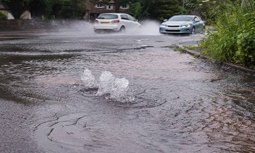

This project theme examines the technologies, protocols, and algorithms that are required to maximise the usage and lifetimes of modern water networks while minimising their costs. Two novel approaches are used in this theme of work; technologies that provide the adaptivity of the water network to make it dynamically reconfigurable, as well as frugal computing solutions. There are two large projects in this theme: NEC Smart Water is a project with Ivan Stoianov in Civil Engineering to examine how to build next-generation flexible water distribution systems. FP7 WISDOM: WISDOM aims at integrating and demonstrating innovative ICT systems and services for efficient water use and reuse in order to improve household, business and societal awareness and induce changes in consumers’ behaviour and to enable innovative resource and demand management scheme and adaptive pricing incentives.
The work carried out under the theme of Smart Water is funded from many sources and is highly interdisciplinary; specifically we have close links with Imperial College’s Civil Engineering Dept. However, the overarching theme is to go beyond mere telemetry for water leak detection to developing fully distributed solutions the make water systems more sustainable.’
Main Contributors
Projects:
- Intel ICRI Sustainable Connected Cities: examining how game theories can optimise the energy/water nexus in realistic settings. This is co-supervised with Ivan Stoianov, Civil Engineering.
- NEC Smart Water Lab: Co-I with Ivan Stoianov (PI), Civil Engineering, examining the technologies to dynamically reconfigure District Meter Areas (DMAs) using pressure and flow data.
- ICT Labs, Cyber-physical Systems Action Line: Intelligent Integrated critical Infrastructures for smarter future Cities (i3C): examining control and network protocols in water networks.
- Real-time Monitoring of urban water systems (2009-2015): with Ivan Stoianov sponsored by EPSRC funded Industrial Doctorate Centre for the Water Sector.
- PIPES (Personalised Information from Prioritised Environmental Sensing) (2002-2005): DTI funded project to provide timely, relevant information on water network infrastructure integrity. Autonomous AI techniques enabled the operation and connectivity of heterogeneous devices to self-organise, according to user priorities. With BT, Manchester Uni. and Severn-Trent Water.
FP7 WISDOM
WISDOM aims at integrating and demonstrating innovative ICT systems and services for efficient water use and reuse in order to improve household, business and societal awareness and induce changes in consumers’ behaviour and to enable innovative resource and demand management scheme and adaptive pricing incentives.
WISDOM is a project funded under the EU 7th Framework Program which started in February 2014 and will run for 3 years.
Water analytics and Intelligent Sensing for Demand Optimised ManagementThe WISDOM (Water analytics and Intelligent Sensing for Demand Optimised Management) project aims at developing and testing an intelligent ICT system that enables “just in time" actuation and monitoring of the water value chain from water abstraction to discharge, in order to optimise the management of water resources.The WISDOM project’s unique selling point is the combined use of three key elements: the adoption of a semantic approach that captures and conceptualizes holistic water management processes, including the associated socio-technical dimensions (social networks interactions with physical systems).The adoption of semantic modeling will enable to promote:
- the (semi)automated control of the water system operation,
- the computer-aided decision making for human intervention,
- the data sharing among numerous components and tools, and
- the integration of the water infrastructure functionalities,
- the interfacing with other smart energy infrastructures and building systems.
The WISDOM project considers a holistic view of water management systems and processes across the entire water value chain, from abstraction to discharge. The importance placed on the socio-technical dimensions of the water value chain is another key aspect of the WISDOM project. To this end, the influences of water customers’ usage characteristics and how they interact with the water network will be considered in the overall view of the water value chain.Pilots Projects – in Wales (United Kingdom) and La Spezia (Italy) will be used to show the benefits that the WISDOM system can bring in terms of; water network knowledge, demand management and resource management. A full-scale experimental facility in France will also be used to validate some of the services provided by the WISDOM solution before being installed, monitored and evaluated in the pilots projects.These results will be used to identify how the project can be replicated throughout all countries and differing European climatic areas. This will enable the development of effective business models for the implementation of the WISDOM system.WISDOM, is a research and demonstration project funded under the EU 7th Framework Program which started in February 2014 and will run for 3 years.WISDOM is a member of the ICT4Water Cluster consisting of ten projects, who all work on smart water technologies to ensure access to sufficient and clean drinking water for current and future generations.